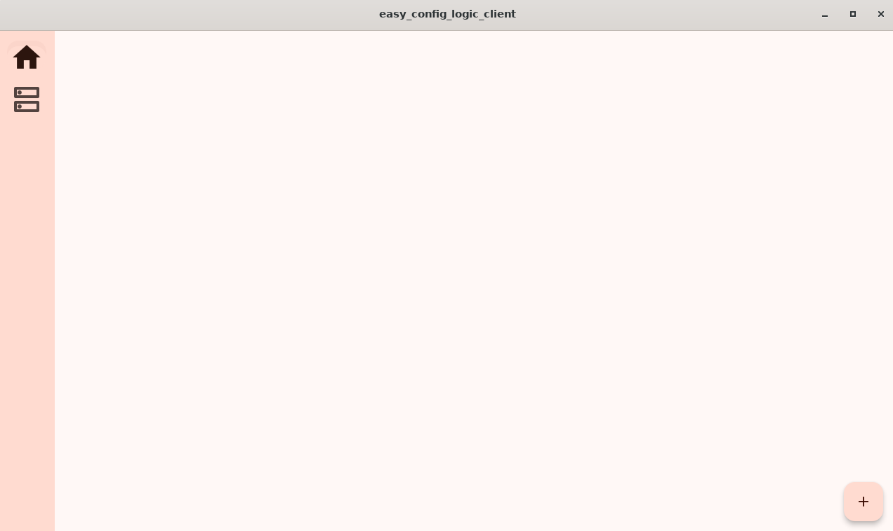
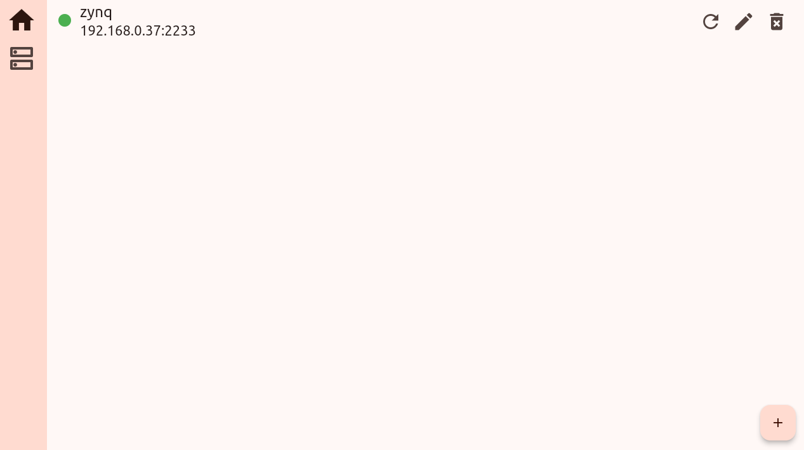
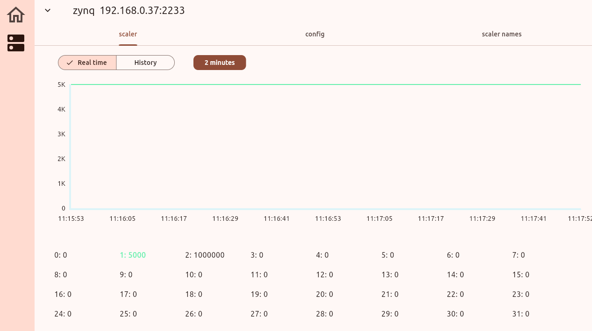
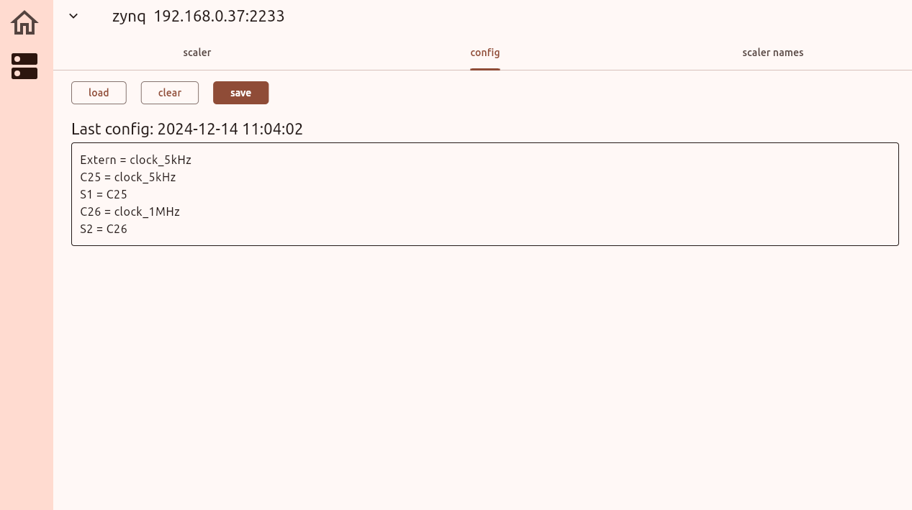
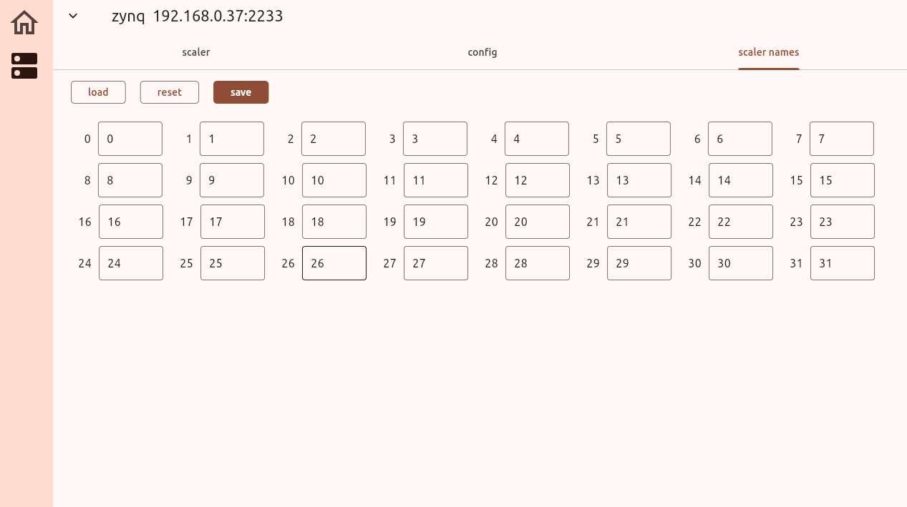

开始使用
推荐用法
启动服务端
其中 -c 表示从配置文件中读取配置，而对应的配置文件就是 config.toml，用的是 TOML 格式。简单起见，这里给出一个配置文件的示例
以上三个参数是运行所需的基本参数
name给设备命名，主要用于在存储数据时给数据文件命名path指定数据存储的路径port即设备的端口，主要用于和客户端沟通
另一方面，也可以通过除了 -c以外的选项指定服务端的配置，而不需要通过配置文件
-n或者--name指定设备名字-d或者--path制定数据存储路径-p或者--port指定端口
添加、编辑、移除设备
配置并启动服务端后，就需要在另外的电脑中启动客户端。客户端安装好后可以通过命令
启动后进入主页面

点击右下角的加号进入添加设备页面，在该页面可以添加对应的刚刚运行了服务端的设备。
左上角箭头返回上一个页面。name 输入设备名称，这里的设备名称仅用于标识不同的设备，无需和服务端中的设备名字一样。address 中输入设备的 IP，可以在设备中通过 ifconfig ，前提是已经连接了网线。port 设置设备的端口，端口需要和在服务端中设置的一样。
三个参数都输入后，点击 save 按钮，即可添加设备。添加好设备后再主页面就可以看到新添加的设备，设备前面的绿灯表示设备正常连接。

设备后面有三个图标，分别用于刷新设备、编辑设备、删除设备。
查看计数率
点击设备即可进入计数率统计页面。

该页面中有三个标签页，起始是在 scaler 页面，用于查看计数率统计。可以选择查看实时的计数率或者看过去一天的计数率变化，由该标签页最上方的 Real time 和 History 选择。中间的图显示计数率随时间变化，默认时间长度是 2 分钟，可以通过上面的 2 minutes 按钮选择不同的时间长度。底下的时不同的计数器的计数率变化，点击对应的计数器可以让其在图中展示（隐藏）。
配置逻辑
点击 config 标签页进入逻辑配置页面。

该页面上面三个按钮分别用于载入上一次成功的配置（load）、清空（clear）、保存当前配置（save）。按钮下方显示的是上一次配置的时间，最下面的输入框用于输入配置。
配置的形式和语法参考配置语法
修改计数器名字
第三个标签页用于修改计数器的名字。实验的时候计数器代表了不同的触发，添加一个别名有助于记忆。

上面同样有三个按钮，分别用于载入当前设置（load）、重置默认（reset）、保存（save）。
数据存储
服务端会存储两种数据，第一种事计数器的数据，第二种是配置的记录。
计数率
计数器的数据记录在前面设置的路径中（示例中是 ./data/dev/），单个数据文件对应单天单设备的数据。数据文件的名字是 时间-设备名.bin，可以调用程序解码成可以用 excel 读取的 csv 格式。有效数据一共 86400 行 32 列，每行代表一秒，每列代表一个计数器。
配置记录
配置的记录会存储在 ~/.easy-config-logic 中，该目录下有两个文件
-
config-log.txt文件，实质是 csv 格式的，用表格的方式记录了配置逻辑的记录。每一次配置 FPGA 都会在文件末尾添加一条新的记录，记录一共有 4 项，分别是 run 序号、时间、用表达式还是寄存器方式配置、记录备份文件名。 -
last-config.txt文件，记录上一次用表达式形式配置 FPGA 时的配置信息。该文件有 3 行，分别表示 run 序号、配置时间、配置备份文件名，其实就是config-log.txt中最后一次用表达式形式配置 FPGA 的信息。这个文件主要用于在 UI 中加载上一次配置的表达式。
同时，该目录下还有一个 backup/ 子目录，子目录下都是之前每一个配置的内容（或者说备份）。如果使用表达式形式配置的，就会存有对应的表达式形式和寄存器形式备份，如果是用寄存器形式配置的，就只有寄存器形式的备份。这些备份文件同样是方便后续检查用的。
总之，该目录的结构如下
config-log.txt
last-config.txt
backup/
xxx-backup.txt
xxx-backup-register.txt
不用 GUI 配置
参考配置语法，编写自己的配置文件，或者使用 example 目录下的样例 example_logic_0.txt，输入如下命令进行配置
不用 GUI 查看计数率
用 config 配置好后，运行
会在屏幕中动态显示当前计数器的计数率。